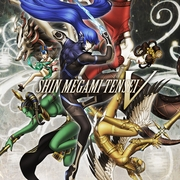

|  | |
| Tiempo de juego | No Jugado |
| Última actividad | Nunca |
| Añadido | 11/6/2024 12:24:38 |
| Modificado | 11/6/2024 22:30:18 |
| Estado de finalización | No Jugado |
| Librería | Playnite |
| Fuente | 4TB TANK |
| Plataforma | Nintendo Switch |
| Fecha de lanzamiento | 11/11/2021 |
| Puntuación de la Comunidad | 71 |
| Puntuación de la Crítica | 70 |
| Puntuación de usuario | |
| Género | RPG |
| Desarrollador | Atlus |
| Editor | Atlus |
| Característica | Single-player |
| Enlaces | Wikipedia Twitch Wikia |
| Tag | |
Forge the destiny of a dying world amidst a power struggle between gods and demons in Shin Megami Tensei V. In this expansive RPG, take control of an enormously powerful being, the Nahobino, to battle against -- and alongside -- hundreds of demons in a desecrated land. As an ordinary high school student, you find yourself transported to a crumbling realm littered by the remnants of what was once Tokyo. Savaged by war, this netherworld known as Da’at hides many secrets among its ruins -- and danger in every corner. What good is power if you do not use it? The numerous demons that inhabit Da’at will put up challenges wherever you go. Put your new talents to the test and take the fight to all manner of demons in turn-based battles. Up to three recruited demons can fight by your side in each battle, so always be on the lookout for allies that can broaden your offensive options. Many demons have weaknesses, but they won’t reveal them willingly. Launch a variety of attacks until their vulnerabilities are revealed. Each successful strike against a weak point will do great damage, and grant you additional consecutive turns to continue the assault uninterrupted. Stay on your toes, as wily demons are all too happy to exploit your weaknesses in kind, and will turn the same strategies back on you, including Magatsuhi. Study enemies well, test their resolve and always press their weaknesses to retain your advantage. Only the foolish face frightening foes unprepared -- crush them quickly before they crush you! But don’t dismiss the idea of guarding when facing tough enemies, unless you want to be obliterated in a single blow...